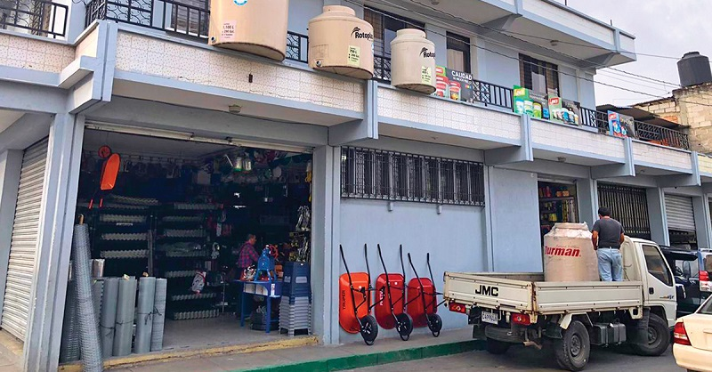

ACERCA DE NOSOTROS
Nuestros fundadores, la familia Arias, llevan en el negocio de la ferretería por más de 30 años,
por esta razón entienden los problemas que se tienen con las escaces de productos y precios
sobrevalorados que existen en el mercado. Por ello, en 1992 nace FERRETERIA COMERCIAL ARIAS,
una ferretería importadora, mayorista y distribuidor a precio super bajos de las principales marcas del ramo,
dedicados a impulsar el crecimiento y construcciones de los hogares peruanos, mediante el suministro
de materiales, asesoría y servicio. En FERRETERIA COMERCIAL ARIAS encontrará productos de 3 a 5
veces más surtido que la competencia mayorista, para satisfacer sus necesidades de equipos de herramientas,
grifería y tuberías, iluminación y accesorios eléctricos, cerrajería, pintura, y todo en ferretería.
